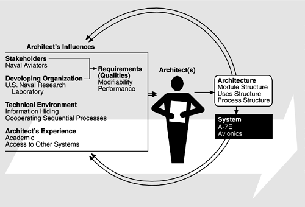

| [ Team LiB ] |
|
3.1 Relationship to the Architecture Business CycleFigure 3.1 shows the ABC as it pertains to the A-7E avionics system described in this chapter. The system was constructed beginning in 1977 for the naval aviators who flew the A-7E aircraft and was paid for by the U.S. Navy. The developing organization was the software engineering group at the U.S. Naval Research Laboratory. The developers were creating the software to test their belief that certain software engineering strategies (in this case, information hiding and cooperating sequential processes) were appropriate for high-performance embedded real-time systems. Figure 3.1. The ABC as it relates to the A-7E avionics systems The architects included one of the authors of this book and one of the leaders in the development of software engineering principles, but the architects had little experience in the avionics domain, although they did have access to other avionics systems and to experts in avionics. There was no compiler available for the target platform. We will start by explaining the application, what the system does, which qualities were important to achieve, and the software's role in performing the system's task. |
| [ Team LiB ] |
|